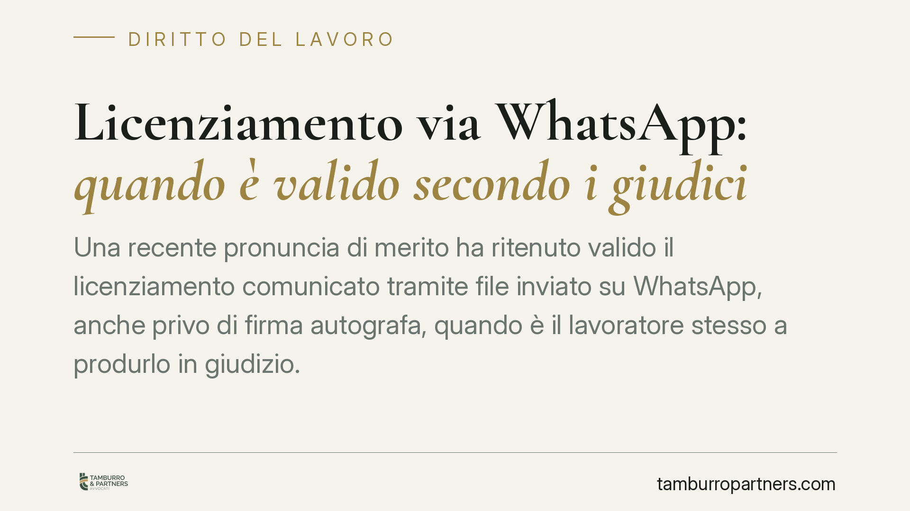

Licenziamento via WhatsApp: quando è valido secondo i giudici
Una recente pronuncia di merito ha ritenuto valido il licenziamento comunicato tramite file inviato su WhatsApp, anche privo di firma autografa, quando è il lavoratore stesso a produrlo in giudizio. La decisione tocca un nodo pratico sempre più frequente: il requisito della forma scritta non è legato al supporto cartaceo. Restano però intatti gli obblighi sostanziali, la cui violazione espone il datore a pesanti conseguenze indennitarie.

Il caso
Un datore di lavoro comunica il recesso non con la classica lettera raccomandata, ma inviando un file al dipendente tramite WhatsApp. Il documento non reca firma autografa. Il lavoratore lo impugna e lo produce in giudizio a sostegno delle proprie difese.
Secondo una recente sentenza di merito (Tribunale di Brindisi, sezione lavoro; estremi in corso di verifica), quel licenziamento soddisfa comunque il requisito della forma scritta. Il ragionamento merita attenzione perché separa due piani spesso confusi: la validità formale dell'atto e la sua legittimità sostanziale.
Inquadramento normativo
L'art. 2 della L. 604/1966 impone che il licenziamento sia comunicato per iscritto. È una forma scritta ad substantiam, cioè richiesta a pena di nullità: senza forma scritta, il recesso è come non intervenuto.
Il punto è che la norma prescrive la forma, non il supporto. La scrittura può essere veicolata su carta, in formato digitale o attraverso un file trasmesso via messaggistica, purché sia riconoscibile la volontà di recedere e il documento sia riferibile al datore. Quando è lo stesso lavoratore a produrre il file in giudizio, viene meno ogni dubbio sulla ricezione e sull'esistenza materiale dell'atto: la contestazione sulla forma perde consistenza.
Attenzione, però: la validità formale non chiude la partita. Il recesso deve essere sorretto da una giusta causa o da un giustificato motivo (artt. 1 e 3 L. 604/1966). Nel licenziamento per giustificato motivo oggettivo — quello legato a ragioni economiche o organizzative — la giurisprudenza richiede al datore di dimostrare anche l'impossibilità di ricollocare il lavoratore in altre mansioni compatibili. È il cosiddetto obbligo di repechage: non è codificato in una norma specifica, ma è di elaborazione giurisprudenziale, ancorato all'art. 3 L. 604/1966 e al principio del licenziamento come *extrema ratio*.
Sul versante sanzionatorio, per i rapporti soggetti al D.Lgs. 23/2015 (contratto a tutele crescenti), la violazione degli obblighi sostanziali comporta, di regola, una tutela di natura indennitaria commisurata all'anzianità di servizio, salvi i casi in cui la legge prevede la reintegrazione.
Cosa cambia in concreto
Per il datore di lavoro il messaggio è ambivalente. Da un lato, un canale informale come WhatsApp può in astratto integrare la forma scritta. Dall'altro, affidarsi a strumenti non tracciabili in modo rigoroso è un errore di metodo: espone a contestazioni su data certa, riferibilità e contenuto. Soprattutto, la comodità del mezzo non attenua di un grammo gli oneri sostanziali. Un licenziamento formalmente valido ma privo di giusta causa o di giustificato motivo — o adottato senza aver verificato il repechage — resta illegittimo e apre alle tutele di legge.
Per il lavoratore la produzione in giudizio del file può paradossalmente sanare il vizio formale che intendeva eccepire. Chi riceve un licenziamento su WhatsApp deve quindi valutare con attenzione la strategia difensiva, concentrandola sui profili sostanziali, che sono quelli realmente decisivi.
Sul piano dei termini, l'impugnazione stragiudiziale del licenziamento va proposta, a pena di decadenza, entro 60 giorni dalla ricezione della comunicazione (art. 6 L. 604/1966). A questo termine ne segue un secondo: entro i successivi 180 giorni occorre depositare il ricorso giudiziale o promuovere il tentativo di conciliazione o arbitrato. Il mancato rispetto di uno di questi termini fa decadere dall'azione, indipendentemente dalla fondatezza delle ragioni.
Cosa fare in concreto
Se sei datore di lavoro:
- Privilegia canali con prova certa di invio e ricezione (raccomandata A/R, PEC), riservando la messaggistica a ipotesi eccezionali e comunque documentabili.
- Verifica e documenta *prima* del recesso la sussistenza della giusta causa o del giustificato motivo, e conserva le evidenze del tentativo di ricollocazione.
- Fai controllare la lettera di licenziamento da un professionista prima dell'invio: la forma è solo il primo scoglio.
Se sei lavoratore:
- Non trascurare il termine di 60 giorni per l'impugnazione, seguito da quello di 180 giorni per l'azione giudiziale: conteggiali dalla data di ricezione.
- Prima di produrre un documento in giudizio, valuta con un legale gli effetti processuali di quella scelta e sposta il baricentro della difesa sui profili sostanziali (motivazione e repechage).
Disclaimer
Contributo informativo a cura di Tamburro & Partners Avvocati - Avv. Giuseppe Tamburro. Non costituisce parere legale.
Ogni storia di lavoro ha i suoi tempi.
Se gestisci HR e vuoi un confronto su contenzioso, ispezioni o licenziamenti, scrivi allo studio. Ti rispondiamo entro un giorno lavorativo.